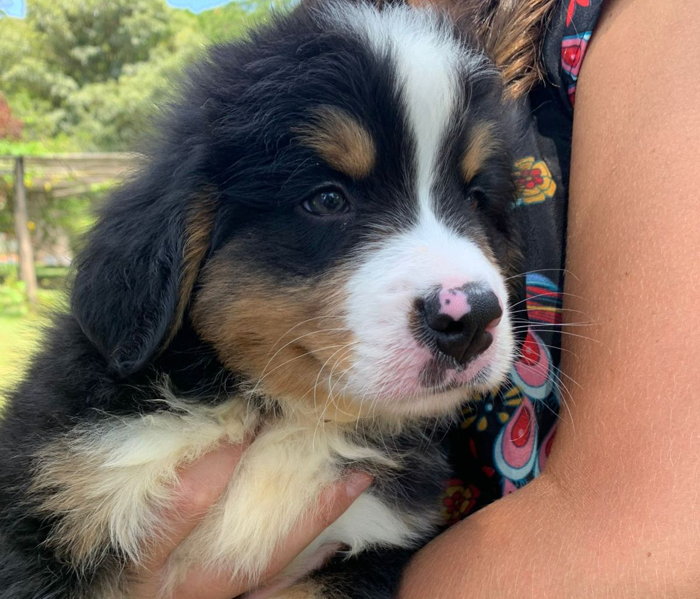
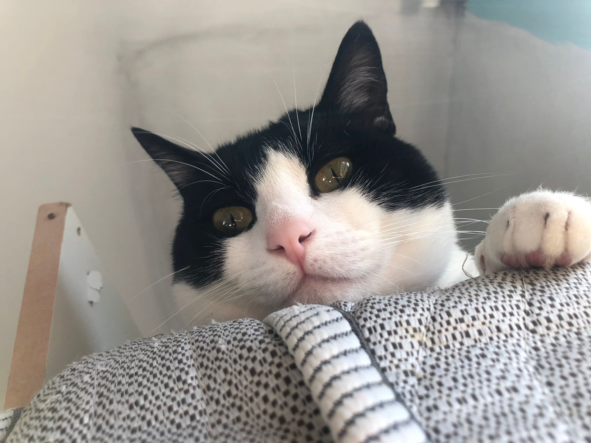
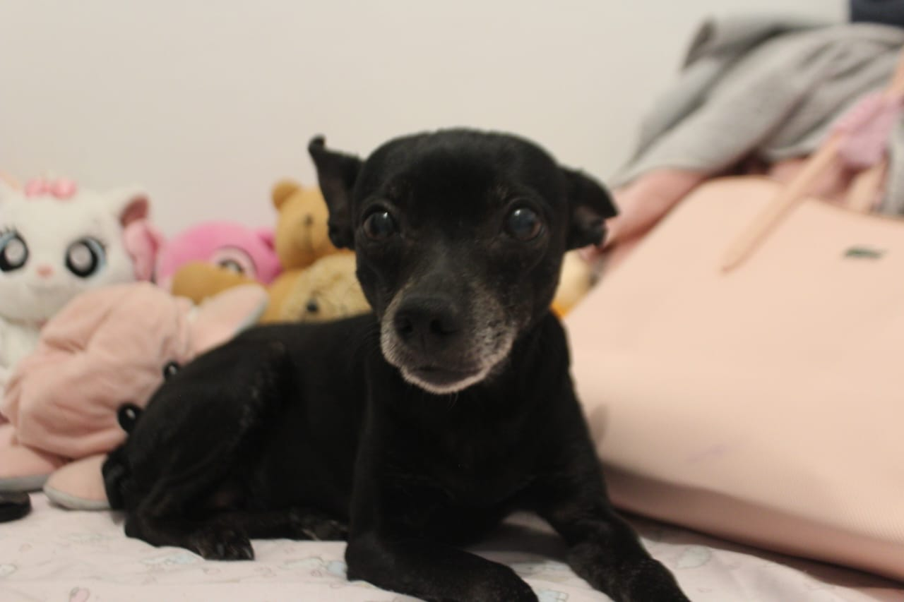

Purrs
& Paws
Home
Sobre
Blog
Sair
Olá,
usuário
.
Bem vindo a nossa página de blog dedicada a dicas e informações sobre Pets.
Junte-se a nós para explorar histórias, insights e dicas para apoiar nossos amados
gatos e cães.
Conheça nosso Blog
Blog
Campanhas
Quiz
Dados do Site

Abandono de animais: por que é importante falar sobre o tema?

Gato pode beber leite? Saiba a verdade sobre o mito

Cachorro pode tomar Yakult? Saiba o que fazer